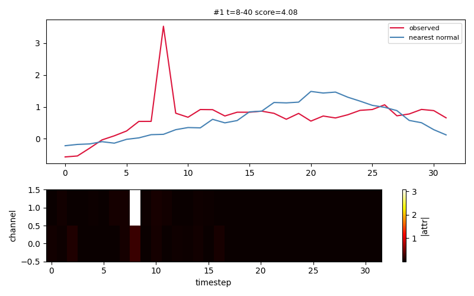
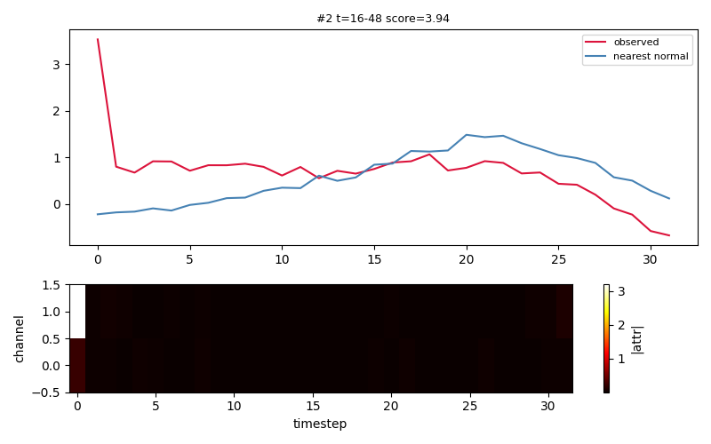
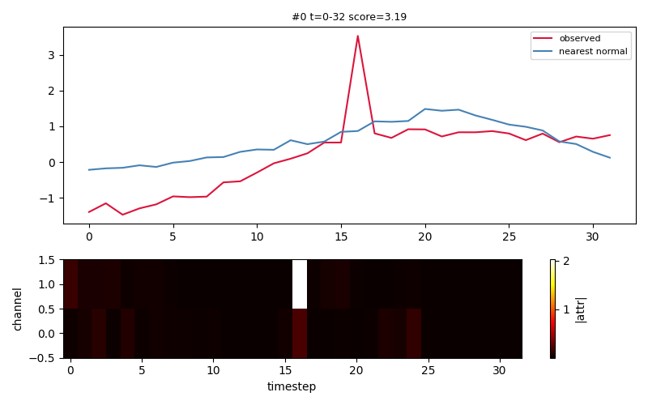
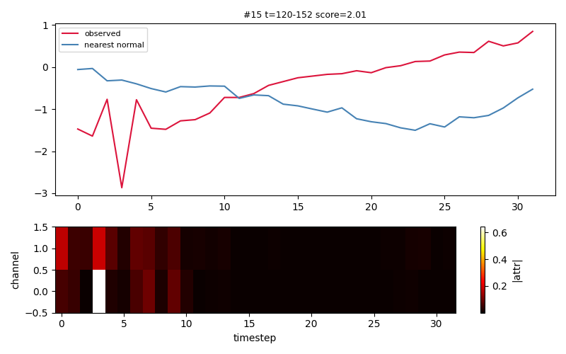
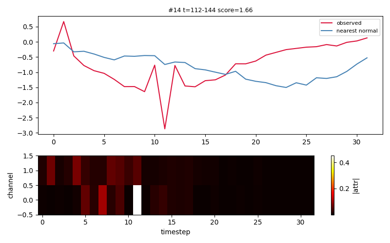
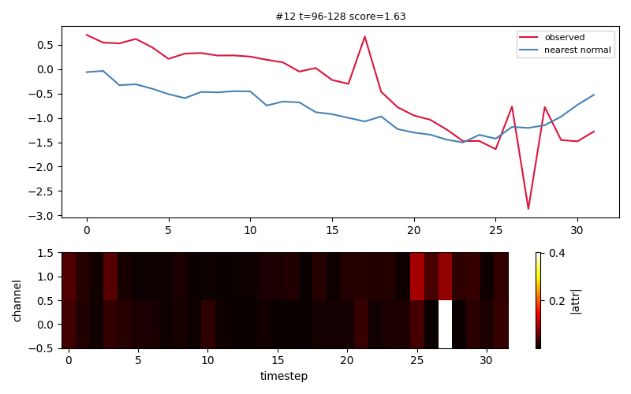
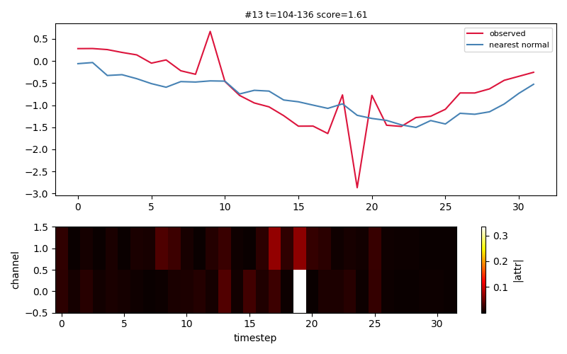
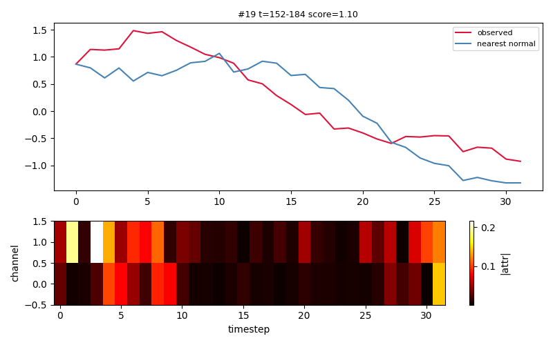
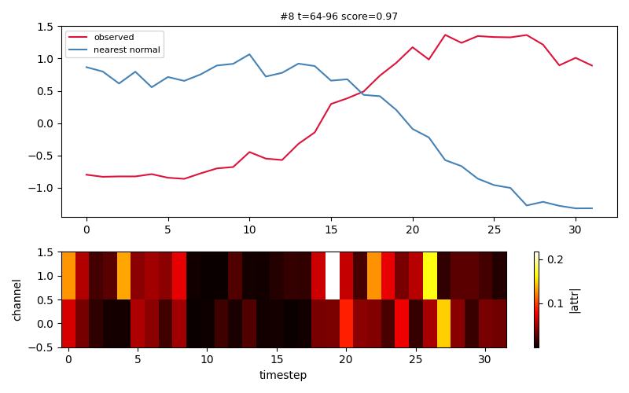
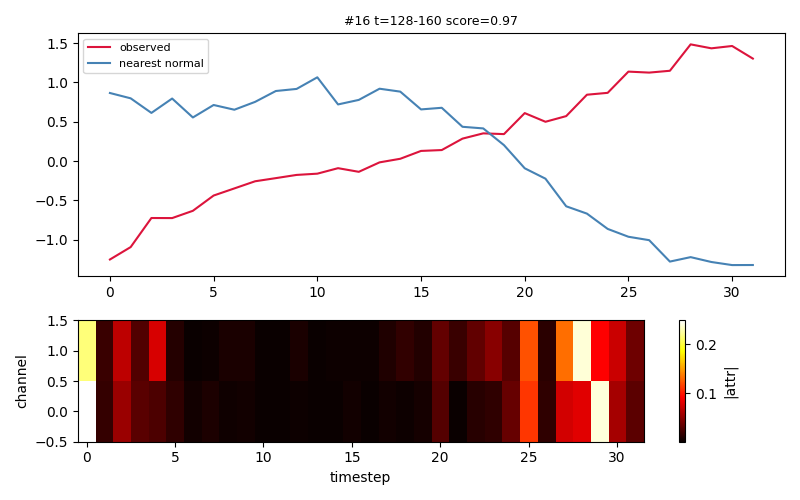

Window 8-40 flagged with score 4.082 (threshold 1.717). Most responsible channels: ch1 (0.11), ch0 (0.02). A counterfactual (valid) restores normal by changing 100.0% of entries (L1=33.77), mostly ch1, ch0. Closest normal: domain_0; invariant dims 0.

Window 16-48 flagged with score 3.944 (threshold 1.717). Most responsible channels: ch1 (0.11), ch0 (0.02). A counterfactual (valid) restores normal by changing 87.5% of entries (L1=39.90), mostly ch0, ch1. Closest normal: domain_0; invariant dims 0.

Window 0-32 flagged with score 3.189 (threshold 1.717). Most responsible channels: ch1 (0.08), ch0 (0.03). A counterfactual (valid) restores normal by changing 93.8% of entries (L1=33.95), mostly ch0, ch1. Closest normal: domain_0; invariant dims 0.

Window 120-152 flagged with score 2.011 (threshold 1.717). Most responsible channels: ch0 (0.03), ch1 (0.03). A counterfactual (valid) restores normal by changing 89.1% of entries (L1=4.94), mostly ch1, ch0. Closest normal: domain_0; invariant dims 0.

Window 112-144 flagged with score 1.662 (threshold 1.717). Most responsible channels: ch0 (0.03), ch1 (0.02). A counterfactual (valid) restores normal by changing 95.3% of entries (L1=5.64), mostly ch1, ch0. Closest normal: domain_0; invariant dims 0.

Window 96-128 flagged with score 1.634 (threshold 1.717). Most responsible channels: ch0 (0.02), ch1 (0.02). A counterfactual (valid) restores normal by changing 84.4% of entries (L1=1.62), mostly ch1, ch0. Closest normal: domain_0; invariant dims 0.

Window 104-136 flagged with score 1.608 (threshold 1.717). Most responsible channels: ch0 (0.02), ch1 (0.01). A counterfactual (valid) restores normal by changing 48.4% of entries (L1=0.20), mostly ch0, ch1. Closest normal: domain_0; invariant dims 0.

Window 152-184 flagged with score 1.099 (threshold 1.717). Most responsible channels: ch1 (0.05), ch0 (0.03). A counterfactual (valid) restores normal by changing 48.4% of entries (L1=0.20), mostly ch0, ch1. Closest normal: domain_0; invariant dims 0.

Window 64-96 flagged with score 0.974 (threshold 1.717). Most responsible channels: ch1 (0.05), ch0 (0.03). A counterfactual (valid) restores normal by changing 48.4% of entries (L1=0.20), mostly ch0, ch1. Closest normal: domain_0; invariant dims 0.

Window 128-160 flagged with score 0.970 (threshold 1.717). Most responsible channels: ch1 (0.04), ch0 (0.04). A counterfactual (valid) restores normal by changing 48.4% of entries (L1=0.20), mostly ch0, ch1. Closest normal: domain_0; invariant dims 0.